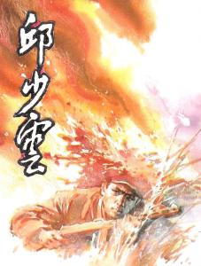

on June 25, 1950, the Korean war broke out, the democratic people's Republic of Korea launched an attack, the Republic of Korea retreated one after another and appealed to the United States and other allies for help. U.S. President Truman authorized U.S. troops stationed in South Korea to attack North Korean troops that day in order to safeguard its leading position and interests in Asia. On July 7, 1950, the United Nations passed resolution 84 authorizing the United Nations troops led by the United States to intervene in the Korean war by force. On the same day, the People's Republic of China formed the Northeast Frontier Force (later renamed the Chinese People's Volunteers). If the Korean People's Army is defeated, China can quickly send troops into North Korea to help North Korea fight against the United Nations troops led by the United States.
on September 15, 1950, U.S. troops landed in Incheon. the Korean battlefield situation reversed and the Korean people's army collapsed. Because North Korea blocked military intelligence from China, the war broke out without informing China in advance, which caused Chinese leaders to be quite dissatisfied with it. However, even though the United States was directly involved in the war, it still expressed its support for North Korea. The Chinese government expressed its firm protest against the U.S.-led "16-nation" U.N. military strike against the Korean People's Army, but the U. At this critical moment, the CPC Central Committee and Chairman Mao Zedong wisely decided to send the Chinese People's Volunteers to North Korea to fight side by side with the heroic Korean people and the Korean People's Army to fight against aggression.
In March 1951, Qiu Shaoyun joined the Chinese People's Volunteers in response to Chairman Mao's great call to "resist U.S. aggression and aid Korea and defend our country". When he came to North Korea, he saw U.S. imperialism and Li Chengwan gangs burning, killing, robbing and plundering the North Korean people. Seeing North Korean children suffer the same sufferings as they did in their childhood has all the more aroused Qiu Shaoyun's hatred of the imperialist reactionaries. To contribute everything to defeat the American invaders.
In October 1952, Qiu Shaoyun's company received a glorious and arduous task, namely, to wipe out the US-Lee bandit troops entrenched in the 391 highland between Pingkang and Jinhua and push the front southward. However, there is an open area of 3,000 meters wide between our position and 391 highland, which is the enemy's artillery blockade area. It is really not easy to hit under such long-distance artillery fire. Therefore, in order to shorten the impact distance, surprise and surprise the enemy, our army decided to lurk in the front of the enemy's position the night before the general attack.
In mid-October 1952, during a battle to resist U.S. aggression and aid Korea, Qiu Shaoyun's battalion was ordered to take on a latent task. Before the ambush, Qiu Shaoyun submitted an application form for joining the Party to the Party branch, writing: "He would rather sacrifice himself than expose his goals. He is willing to give his all for the sake of the whole, for the sake of victory and for the liberation of the Chinese and Korean people and all mankind." During the mission, when Qiu Shaoyun was lurking in the grass more than 60 meters away from the enemy's front position, the enemy suddenly approached the lurking area. In order to cover the lurking troops, the command post ordered the artillery to strike the enemy. After being hit, the enemy dispatched an aircraft to conduct reconnaissance and blindly fired reconnaissance Molotov cocktails. A Molotov cocktails landed right beside Qiu Shaoyun. Sparks splashed down on his left leg, burning his cotton-padded clothes, hair and skin. However, in order not to expose the hidden troops, he strictly abided by discipline, gritted his teeth, inserted his hands deeply into the soil, endured severe pain with astonishing perseverance, remained silent and motionless until he died of heroic death at the age of 26.
fire lasts foreverIn October 1952, in order to crack down on the US and South Korean troops entrenched in Shangganling, Qiu Shaoyun, a soldier from the 9th Company of the 29th Division and 87th Regiment of the 15th Army of the Chinese People's Volunteers, was selected to participate in the latent forces and took up the task of removing obstacles after launching the charge. On the morning of the 12th, the enemy planes strafed the latent area where he was, throwing firebombs. The fire spread to him. In order not to expose the latent target, Qiu Shaoyun let the fire scorch his body and did not move. He put his hands deep into the soil, his body tightly against the ground, until the last moment of life, heroic sacrifice.